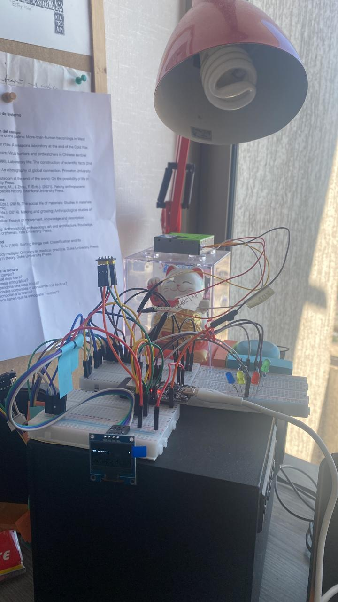
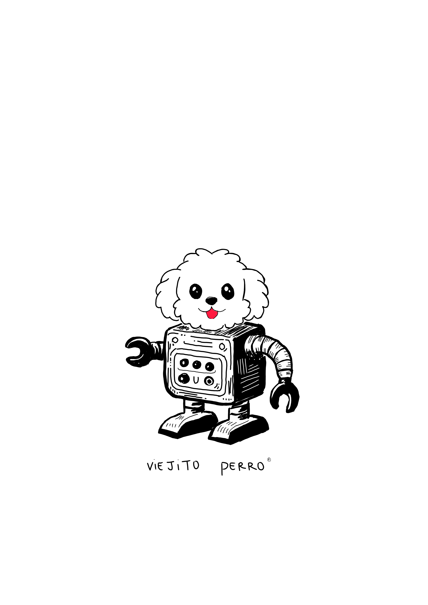
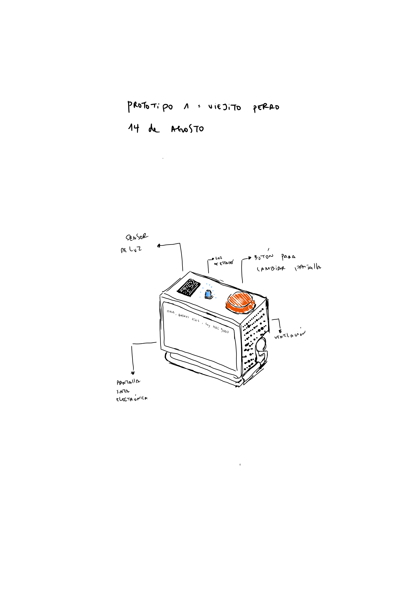
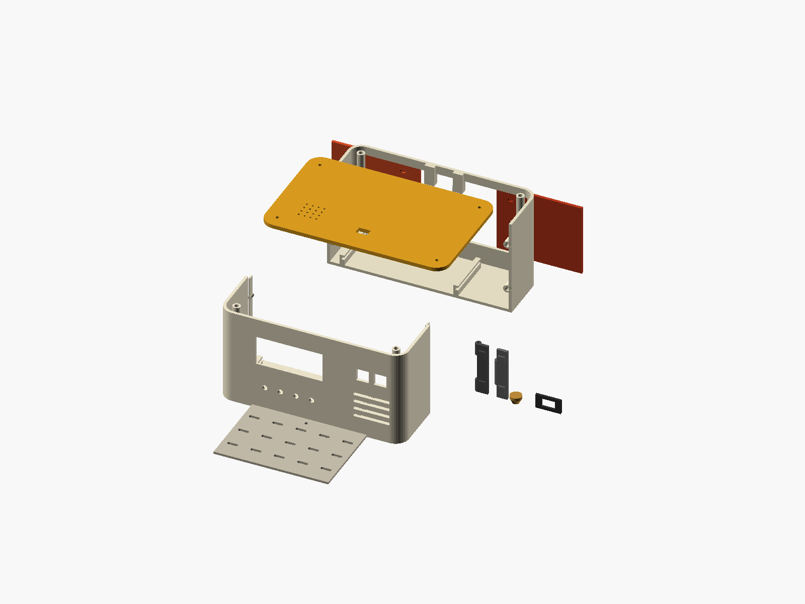
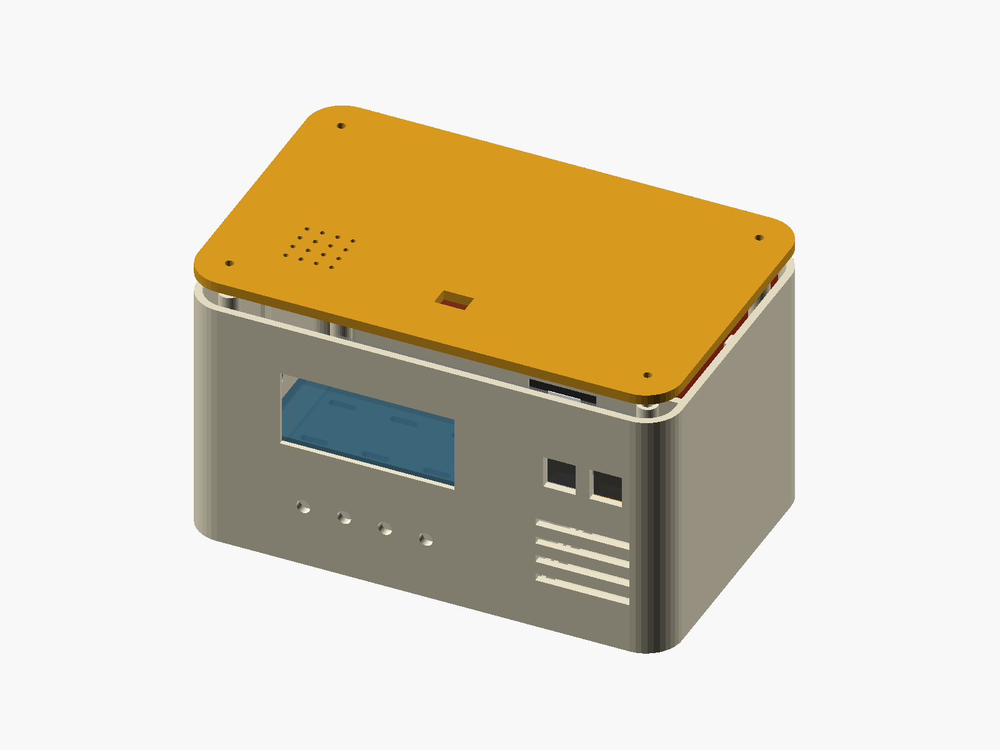
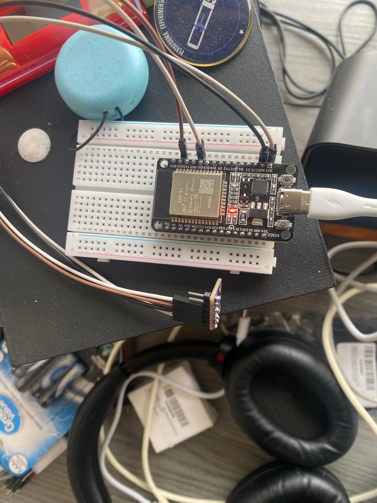
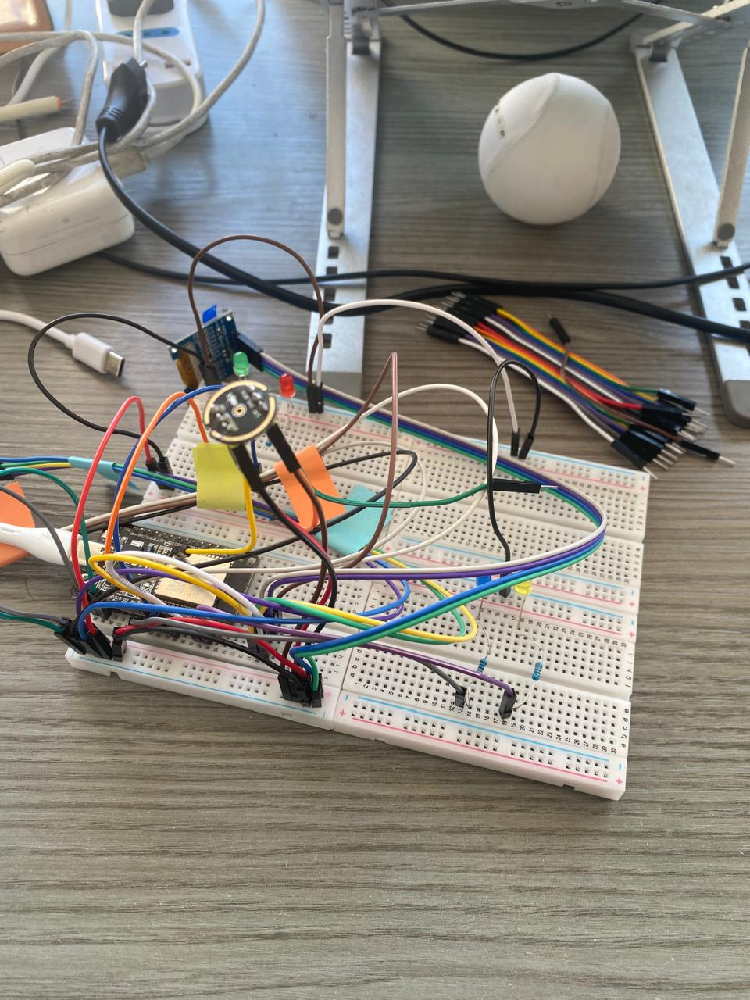
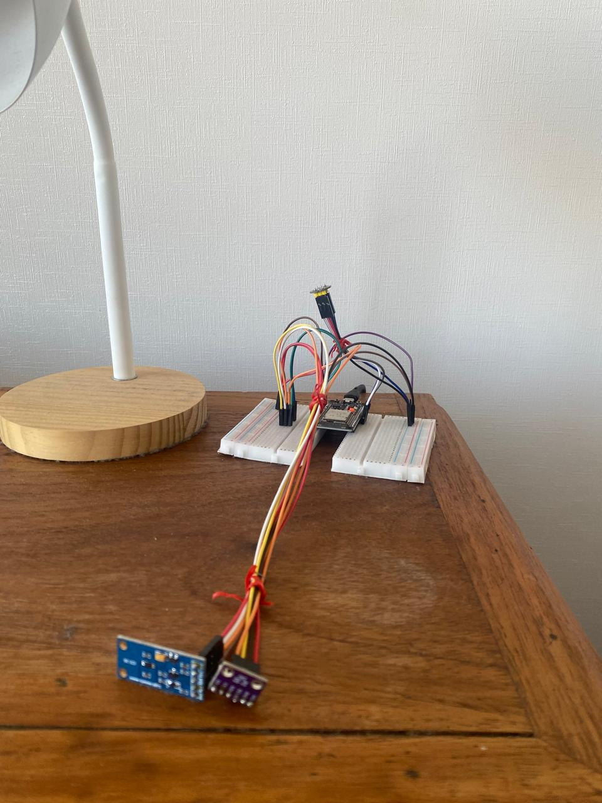
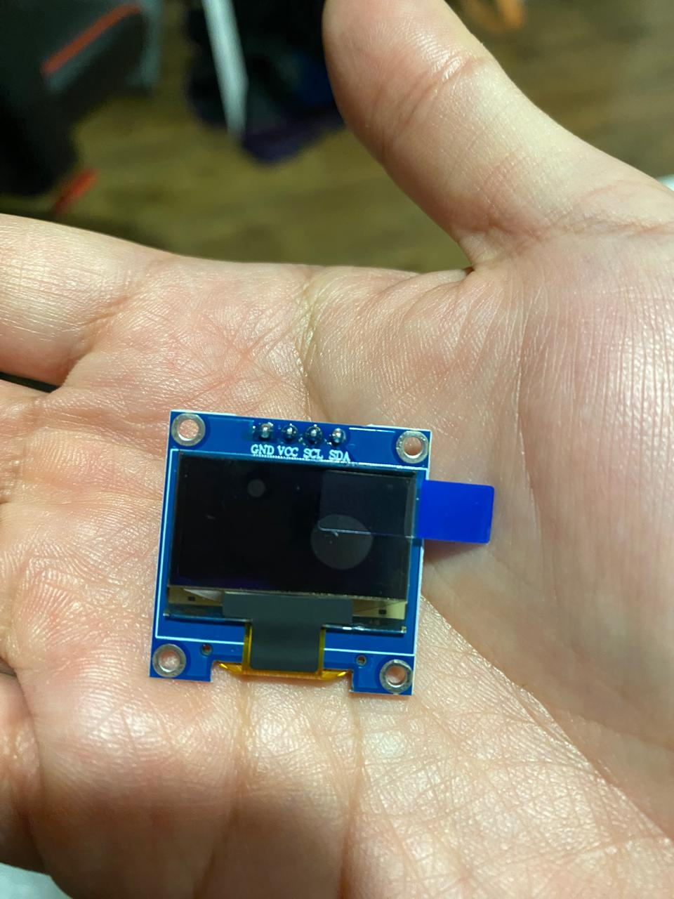

¿Cómo conocer un ambiente sin dejar de habitarlo?
La pregunta retoma una tensión que estuve explorando durante mi primer año de doctorado, aquella que aparece en la brecha entre la experiencia vivida y el dato medido. Podemos conocer el mundo mediante modelos, promedios y representaciones y, al mismo tiempo, distanciarnos de su experiencia sensible.
Viejito-Perro lleva esa inquietud al espacio doméstico. Permite seguir cómo una variación ambiental se transforma en señal, dato, comparación e interpretación. Las mediciones no se tratan como representaciones transparentes, sino que dependen de la posición de los sensores, de decisiones técnicas y de las prácticas cotidianas mediante las cuales adquieren contexto.
El proyecto no pretende resolver la distancia entre conocer y habitar. Explora si una infraestructura de medición puede ampliar la atención hacia el ambiente y, a la vez, cómo podría contribuir a tecnologizar o simplificar su experiencia.

Relación con mi trayectoria
De observar mediaciones a construirlas
El proyecto prolonga prácticas de mi formación antropológica: la observación situada, la elaboración de archivos, la atención a acontecimientos y fallas y el examen reflexivo de instrumentos, datos e infraestructuras. Mi formación complementaria me permitió llevar esas inquietudes hacia la construcción y prueba de un sistema material.
Viejito-Perro es un proyecto independiente desarrollado durante el doctorado. Comparte con mi investigación doctoral un interés por los instrumentos y las traducciones entre materia e información, pero no forma parte del terreno empírico ni constituye un resultado de la tesis.
Un computador querido adquiere una nueva forma
El computador que dio origen al proyecto me fue legado. Había sido un compañero de trabajo querido y, cuando me lo entregaron para jugar y experimentar, su antigüedad evocó la frase «no se le enseñan nuevos trucos a un perro viejo».
El nombre reconoce el tiempo, el cuidado y el afecto invertidos en prolongar su vida mediante nuevas capacidades. Varias decisiones, como los comportamientos luminosos o la incorporación de un personaje en la pantalla, surgieron del deseo de compartir los avances con otros de una manera cercana.
«Acto de Amor» nombra así una forma de construir basada en cuidar, reutilizar y hacer partícipes a otros.




Cómo funciona
Los sensores registran algunas variaciones de la sala y el dormitorio. Dos nodos reúnen las lecturas y las envían a un servidor local, donde se conservan y comparan. Una pantalla, luces e interfaces gráficas permiten expresar algunas de esas relaciones.
- El ambiente varía
- Los sensores registran
- Los nodos reúnen y transmiten
- El servidor local conserva y compara
- Las interfaces expresan relaciones
En cada paso, una variación de la vivienda se transforma: primero en señal y luego en registro, comparación y forma de expresión.
Infraestructura doméstica
Un computador reutilizado funciona como servidor. Dos nodos conectados a la red local reúnen y transmiten las lecturas desde la sala y el dormitorio.
Registros ambientales
El sistema registra temperatura, humedad, presión y luminosidad. Las mediciones de partículas y actividad acústica permanecen como exploraciones experimentales.
La actividad acústica se transforma localmente en indicadores relativos: no se transmiten ni conservan grabaciones.
Archivo y comparación
Las mediciones se conservan dentro de la vivienda para construir registros históricos, comparar habitaciones y relacionarlas con referencias exteriores.
Una forma que emerge al construir
Viejito-Perro no fue diseñado de una vez. Su forma ha emergido mediante incorporaciones sucesivas, pruebas, fallas y nuevas preguntas. Cada capacidad añadida —registrar, comparar, conservar o expresar— modifica el sistema y permite observar aspectos diferentes de la vivienda.
Las fallas también producen aprendizajes. Un sensor que deja de responder, una lectura afectada por la posición del dispositivo o una comparación exterior insuficiente hacen visibles las condiciones necesarias para producir e interpretar un dato.




Interfaces en funcionamiento
Estado y límites
Viejito-Perro está en funcionamiento, pero no es un producto terminado ni un instrumento científico calibrado. El sistema permite observar relaciones parciales y formular preguntas; no ofrece una representación completa o neutral del ambiente.
- Las lecturas dependen de la ubicación y del montaje.
- Los indicadores acústicos no equivalen a mediciones calibradas en decibelios.
- Las referencias exteriores son regionales y modeladas.
- Las interpretaciones sobre actividades domésticas permanecen como hipótesis contextualizadas.
Autoría y colaboraciones
He definido el concepto y los principios del proyecto, reacondicionado y administrado el servidor, seleccionado y montado los componentes, realizado las pruebas físicas, definido comportamientos e interfaces, contextualizado las mediciones y dirigido su documentación y desarrollo.
Parte del código, las configuraciones y la documentación se desarrolló iterativamente con asistencia de herramientas de inteligencia artificial, bajo mi dirección, revisión y comprobación en el sistema físico.
El dibujo original del personaje y las primeras exploraciones visuales de su carcasa fueron creados por Constanza Tizzoni. El bitmap de la pantalla y los modelos tridimensionales posteriores derivan de ese dibujo y se publican con su autorización.
Nicolás Müller me ayudó a identificar, con apoyo de herramientas de inteligencia artificial, las conexiones del sensor SPS30 y colaboró en trabajos de soldadura. También me ha permitido observar un proyecto independiente que desarrolla con sensores de bajo costo para mediciones agrícolas.
Alejandro Bustos ha contribuido mediante conversaciones sobre la orientación y las posibilidades del proyecto, ayudándome a clarificar decisiones y abrir líneas de exploración desde su experiencia con la electrónica. También me facilitó un sensor que aún no ha sido incorporado al sistema.
Próximas exploraciones
- Fabricar carcasas que integren mejor los nodos en la vivienda.
- Investigar formas de comunicación autónoma entre ellos.
- Desarrollar maneras visuales, sonoras e históricas de relacionarse con los registros.
Estas líneas son posibilidades en desarrollo, no capacidades actuales del sistema.